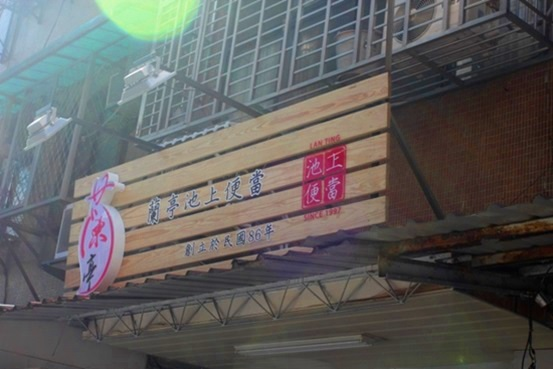

蘭亭池上便當
關於蘭亭池上便當
蘭亭池上便當是一家傳承台東池上優質米食文化的便當專賣店，以嚴選池上好米與新鮮在地食材著稱。品牌承載著對台灣傳統便當文化的敬意與創新精神。
覓食團隊為蘭亭池上便當進行品牌重塑，將傳統便當店的溫馨親切感與現代設計美學完美結合，讓品牌在競爭激烈的快餐市場中展現獨特魅力。
LOGO 設計

- 融入書法筆觸設計，展現中華文化的優雅韻味
- 色彩選用溫潤的大地色系，象徵天然食材與土地的連結
- 字體設計兼具傳統與現代感，吸引不同世代的顧客
- 整體視覺傳達品牌對品質與傳統的堅持
品牌改造成果
蘭亭池上便當的改造項目涵蓋了店面設計、包裝系統、宣傳物料等各個層面。新的視覺識別系統以溫暖的色調營造家的感覺，讓顧客在忙碌的生活中感受到一份溫馨與踏實。
從便當盒設計到店面招牌，每個細節都體現了對池上米食文化的尊重，同時融入現代消費者喜愛的簡約美學，成功提升了品牌的整體形象與市場競爭力。